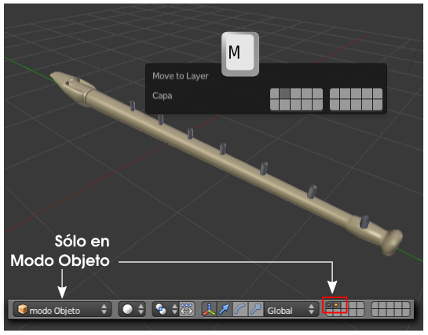

Booleano
Base teórica
El término booleana hace referencia a las operaciones que se pueden realizar entre dos objetos. En diseño 3D se reducen a tres:
- Unión
- Diferencia
- Intersección
Cuando seleccionamos dos mallas y las juntamos con Objeto/Unir, Blender no tiene en consideración cuáles son las partes comunes y no se preocupa de reestructurar el resultado. Además eso es bueno que sea así por las ventajas que supone poder separarlas de nuevo cuando nos convenga.
En la unión booleana el resultado será un objeto en el que los vértices se organicen para que el nuevo objeto sea realmente la suma de los dos que lo originaron.
Antes de entrar a analizar este modificador hay que tener en cuenta tres cosas:
- Si podemos evitarlas, las evitaremos (regla de oro). Las usaremos sólo cuando no haya otra alternativa. En realidad el verdadero problema está en hacerlo convivir con el modificador Subdivisión, uno de los más habituales del diseño 3D. Es por eso que debemos asociar el modificador Booleana con el modelado de piezas mecánicas y asuntos similares.
- La malla resultante es prácticamente seguro que carecerá de una buena topología en la organización de los bucles de bordes. Lo comprobamos en la imagen anterior. Este detalle hace que los objetos resultantes se lleven realmente mal con el modificador Subdivisión. Para encontrar soluciones realmente interesantes debemos usarlas en combinación con otros recursos como el modificador Rehacer malla (del que daremos un breve apunte).
- Hasta hace relativamente pocas versiones de Blender esta operación no era un modificador sino una edición directa donde el resultado era similar al mostrado en la imagen anterior. Ahora aparecen como modificadores y eso ha cambiado considerablemente las cosas porque Blender nos muestra el resultado de la booleana sin necesidad de generar la malla. Antiguamente en una booleana de diferencia se perdía el segundo objeto (el sustraendo, para que nos entendamos); sin embargo ahora es posible conservarlo y variarlo en cualquier momento. El truco: tener el objeto dominante (minuendo) en una capa, y el segundo (sustraendo) en otra distinta.
Vamos paso a paso con un proyecto. Tenemos un modelado inicial para una flauta.
Añadimos un cilindro (Añadir/Malla/Cilindro) sin vértices en las tapas para originar uno de los agujeros.
Ahora podríamos duplicar desde Modo Edición  para conseguir el resto de los agujeros y ahorrarnos al final tener que juntarlos (Objeto/Unir) pero optamos por duplicar ("Shift_D") en Modo Objeto
para conseguir el resto de los agujeros y ahorrarnos al final tener que juntarlos (Objeto/Unir) pero optamos por duplicar ("Shift_D") en Modo Objeto  para manipular las copias más cómodamente.
para manipular las copias más cómodamente.
Cuando estén todos los cilindros en su sitio hacemos Objeto/Unir y aprovechamos para darle un nombre (recordamos que esto puede hacerse en la botonera Elemento del cuadro Propiedades "N"). Lo llamamos agujeros.
El objeto propio de la flauta será el que contenga el modificador Booleano, así que se lo asignamos ahora. Nada ocurrirá porque Blender desconoce cuál es el objeto que tiene que operar como sustraendo. Desplegamos el campo Objeto y allí seleccionamos aquel al que llamamos agujeros. En el editor Vista 3D se muestran las consecuencias de la booleana Intersectar que es la que se aplica por defecto. Nosotros la cambiamos a Diferencia.
Nuevamente nos encontramos con que nada parece suceder en el editor Vista 3D. La operación se está llevando a cabo, lo que ocurre es que los cilindros no nos permiten ver las consecuencias de la resta. El truco ya lo hemos mencionado: llevarlos a una capa distinta.
El cambio de capa sólo puede hacerse desde Modo Objeto  :
:
- Seleccionamos el objeto agujeros.
- Hacemos Objeto/Mover a Capa (o tecla "M") y se despliega un gráfico para que seleccionemos una de las veinte capas disponibles. Nosotros hemos escogido la segunda.

Sobre las capas
- La información visual que se nos ofrece sobre las capas solo aparece en la hilera de iconos del editor Vista 3D cuando estamos en Modo Objeto
 .
.
- Una capa que contiene un punto en su interior nos está informando de que tiene objetos en ella, de lo contrario es que está vacía.
- Si el punto de su interior se muestra naranja es que hay objetos seleccionados en ella.
- Un simple clic sirve para seleccionar una capa.
- La tecla "Shift" pulsada acumula capas seleccionadas.
- Seleccionar una capa es equivalente a hacerla visible tanto en el editor Vista 3D como en el render.
- Un objeto puede estar en varias capas. Sólo tenemos que mantener pulsada la tecla "Shift" en el momento de hacer Objeto/Mover a capa y seleccionar las capas deseadas. Es muy habitual querer que las lámparas estén en todas las capas.
Sabiendo todo lo que hemos aprendido sobre capas está claro que debemos hacer clic sobre la primera de ellas para que se muestre la flauta con los efectos de la booleana sin que se vean los cilindros que originan los agujeros.
Jerarquización simple
- Si la flauta tiene asignado un modificador de Subdivisión debemos aplicarlo con el botón correspondiente; no conviene que conviva con el modificador Booleano durante mucho tiempo. Prácticamente todo saldrá mal si este modificador sigue activo.
- Todo parece perfecto y así sería si no aplicáramos al objeto propio de la flauta ninguna transformación. Si lo movemos, por ejemplo, los agujeros no le seguirán (lógico). La solución está en aplicar una relación de parentesco sencilla (las hay más complejas).
- Hacemos visibles las dos capas con objetos.
- Seleccionamos, en este orden, primero los cilindros de los agujeros y después el objeto del cuerpo de la flauta.
- Hacemos Objeto/Padre/Establecer/Objeto.
¿Qué hemos hecho en realidad?
Ya sabemos que el último objeto seleccionado es el que actúa como dominante. En la jerarquización el objeto dominante quedará como padre y el resto como hijos (en este caso el objeto agujeros).
Si volvemos a dejar el objeto agujeros como no visible podremos seleccionar el cuerpo de la flauta y transformarlo a nuestro gusto porque los agujeros permanecerán en su sitio.
Aquí pueden comenzar problemas en el redibujado de las malla. Pensemos que Blender nos muestra los agujeros virtualmente ya que el modificador Booleano está actuando pero no ha sido aplicado. Cuando no había relación de parentesco el proceso de redibujado era sencillo (por ponerle un nombre) pero ahora Blender debe atender al modificador guardando la relación de parentesco mientras redibuja constantemente el objeto en el editor Vista 3D; eso a nosotros puede que no nos parezca una tarea compleja pero lo es, y mucho. Es por eso que en determinadas circunstancias no se redibujen los agujeros pero eso no significa que no aparezcan en el render.
Analiza y estudia el archivo .blend
Usa este .blend para compararlo con tu resultado una vez que hayas realizado toda la práctica. Te servirá de referencia para autoevaluarte.
Este .blend incluye unas pequeñas bolitas para determinar los agujeros tapados. Cada bolita está en una capa distinta por lo que es muy fácil componer una nota musical.